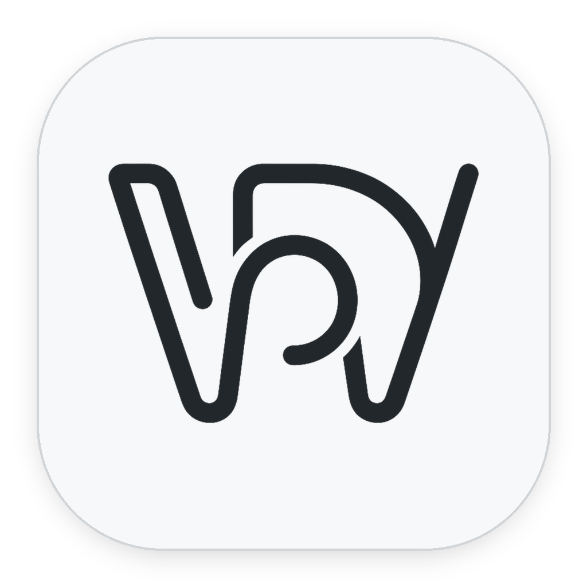

macOS 当前设备
Apple 芯片与 Intel 芯片

DeckWise 安装说明桌面客户端
从想法到课件，在你的桌面上完成。
Apple 芯片与 Intel 芯片
64 位 · x64
64 位 · x86_64 · glibc 2.35+
打开屏幕左上角的 Apple 菜单，选择「关于本机」。如果显示「芯片 Apple M…」，选择 Apple 芯片版；如果显示「处理器 Intel…」，选择 Intel 芯片版。
先将 DeckWise 拖入「应用程序」，再打开它。当前未签名版本可能被系统阻止；确认安装包来自本页后，可在「系统设置 → 隐私与安全性」中找到 DeckWise 并点击「仍要打开」。
先退出 DeckWise，再安装新版本。macOS 拖入「应用程序」并选择替换；Windows 运行新安装程序。项目文件和账户无需重新创建。便携版和 Linux DEB / RPM 需要手动更换；Windows 安装版与 AppImage 可通过软件内的更新提示升级。